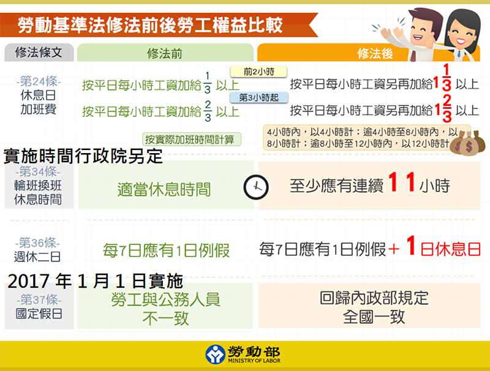
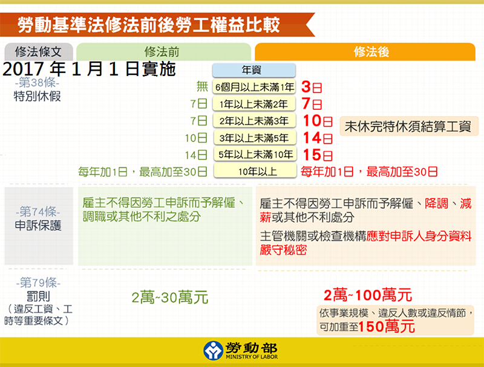
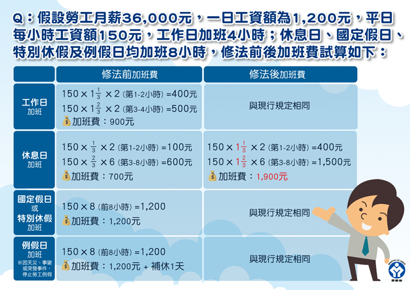
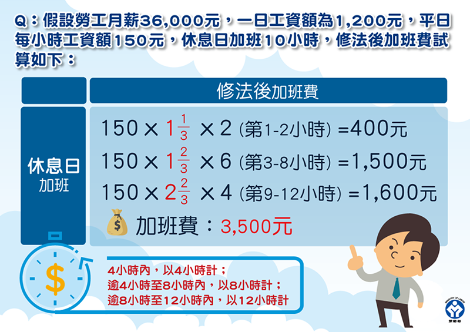
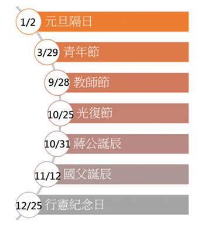
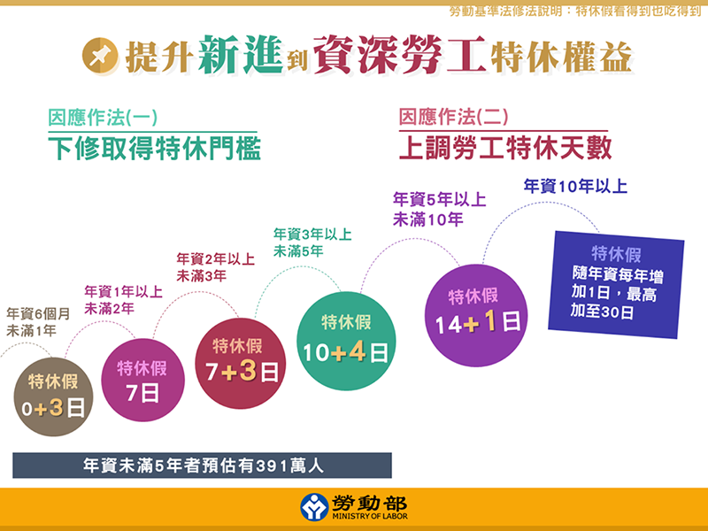

資料來源 : 科技新報 | 發布日期 2016/12/22
爭議不斷的《勞動基準法（勞基法）》修正案 6 日終於在立院三讀通過，除了確定實施「一例一休」、七天假被砍，特休假、加班費給付等相關法條都有修正，而總統府昨 21 日正式公告修正條文，將分三階段上路，第一階段一例一休、休息日加班費加成等條文 23 日就要上路，新制你真的都搞懂了嗎？
幾張圖帶你快速看懂。 勞基法修正案在日前拍板通過，總統府 21 日也正式公告修正條文，宣布政策將分三階段上路，第一階段實施一例一休、加班費加成等條文，明 23 日就要上路，而國定假日回歸內政主管機關全國休假一致、強化勞工特休假權益兩項條文將於 2017 年 1 月 1 日上路，輪休制勞工換班應有 11 小時休息時間上路時程則將另定。


▲除了勞基法第 34 條、37 條與 38 條以外，其他勞基法修正條文，在明 23 日就要上路。（Source：勞動部；實施時間加註：科技新報）
23 日上路！
一例一休到底怎麼休？
所謂的一例一休，「例」指的是例假日、「休」指的是休息日，此次勞基法第 36 條修法，每 7 日應有 1 日例假以外，新增了 1 日的「休息日」，最大的差別在於，雇主不得要求勞工在例假加班，而休息日可協調勞工出勤，但雇主要多發給勞工加班費。

原先的勞基法加班費勞基法修定後，多了 1 日休息日，加班費的計算也有所不同，你可能會困惑，平日、休息日以及國定假日/特休假加班費到底怎麼算？
簡單來說，平日加班費的計算並沒有改變，就是兩小時內按平日每小時工資加給 1/3 以上，第三個小時後加給則以 2/3 計，只要雇主有使勞工每日工作時間超過 8 小時，或每週工作時數超過 40 小時，就應給付。
可協調勞方出勤的「休息日」加班費則有所增加，工作兩小時內，加班費按平日每小時工資加給 1 又 1/3 以上工資，工作第三個小時起，按平日每小時工資另再加給 1 又 2/3 以上工資，而為了保障休息日勞工上班權利，「休息日」加班未滿 4 小時以 4 小時計、超過 4 小時未滿 8 小時則以 8 小時計，而超過 8 小時在 12 小時以內，則以 12 小時計。

另外，如果是一例一休所謂的「例假日」，根據勞基法 40 條規定，沒有天災事故或突發事件，雇主是不得要求勞工在「例假日」出勤的，如果因為上述原因出勤，當日應該加倍給薪，並再予以補假一天。而國定假日與特休假加班，與現行規定一樣，除了當日工資照給之外，需再加發 1 日工資。
如果不會算沒關係，也可以參考加班費試算系統，讓電腦幫你算。
為了配合降低法定工時從原本的「雙週 84 小時」改為「單週 40 小時」，政府砍掉七天國定假日做為降低工時的配套。

而這七天假其實一般工時的人在週休二日實施後早已放不到了，當時被挪移來抵銷法定「雙週 84 小時」工時，每週多出來的 4 小時應工作時數，但勞團先前認為，台灣法定工時已調整為「單週 40 小時」就沒有每週多出應工作時數 4 小時的問題，所以在勞基法修法拍板前，一般工時的人短暫享受了這幾天假。
廢除七天假從明年元旦實施，所以別擔心，今年 12 月 25 日行憲紀念日還是有放假，適逢禮拜天， 26 日還是有補休，另外，應廢除的 1 月 2 日假，因為明年剛好遇到元旦為禮拜天，根據勞基法 37 條，如果國定假日遇例假及休息日應予以補休，所以明年 1 月 2 日還是可以放到假。
勞基法修法強調提升新進與資深勞工的特休權益，年資 6 個月未滿 1 年應給予 3 天的特休假，年資 2 年以上未滿 3 年者特休假多了三天……，年資 10 年以上，隨年資每增加 1 年，就能有多 1 日的特休假，最高加至 30 日。

如果在年度終結或契約終止時，勞工特別休假未休完之日數，不論原因為何，一律折發工資。